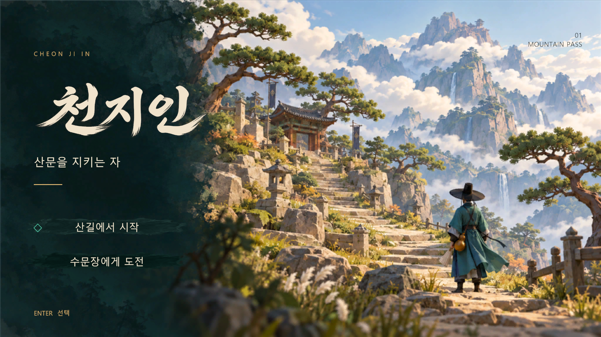
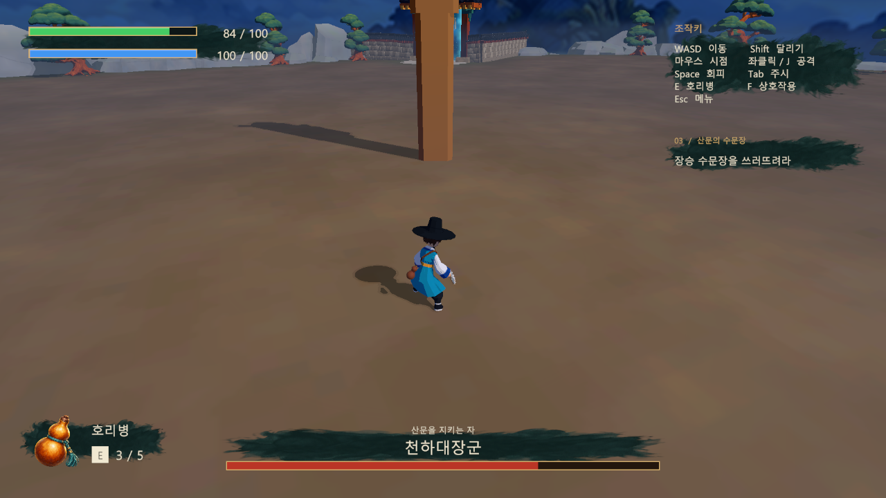
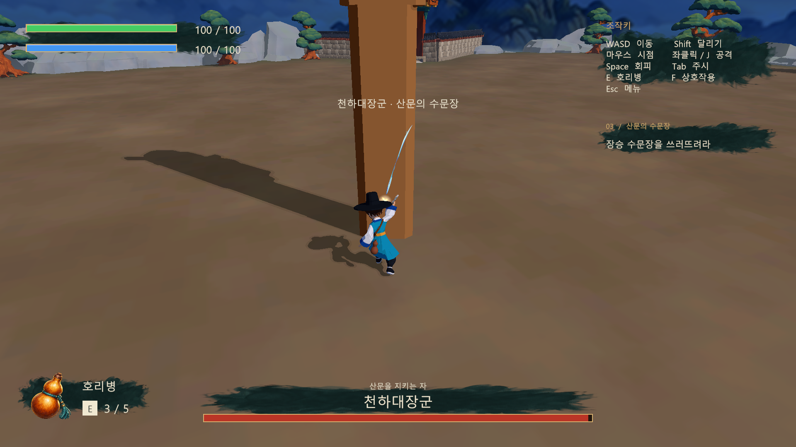
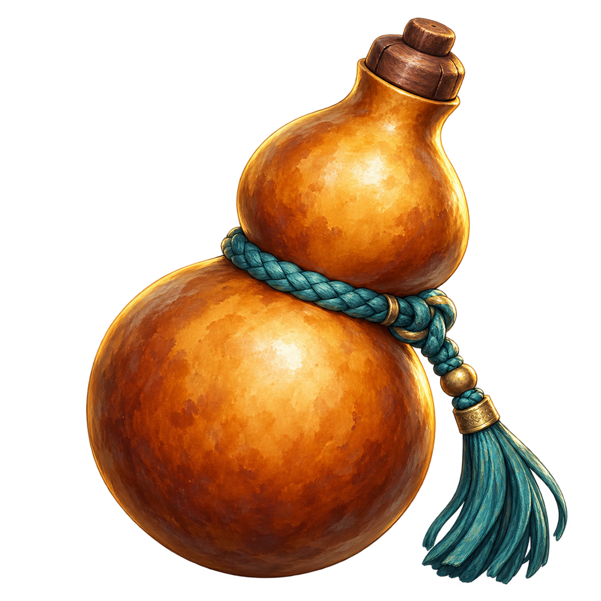
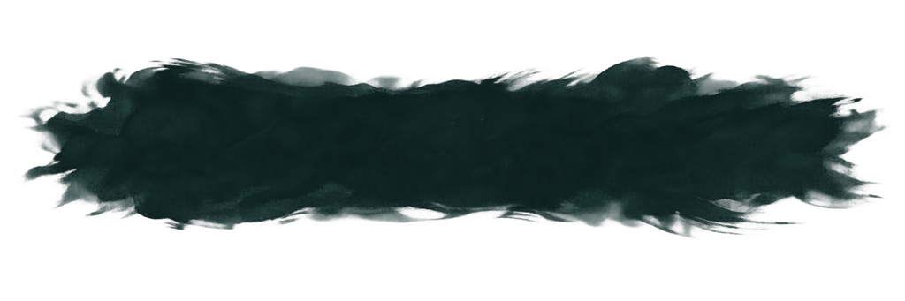
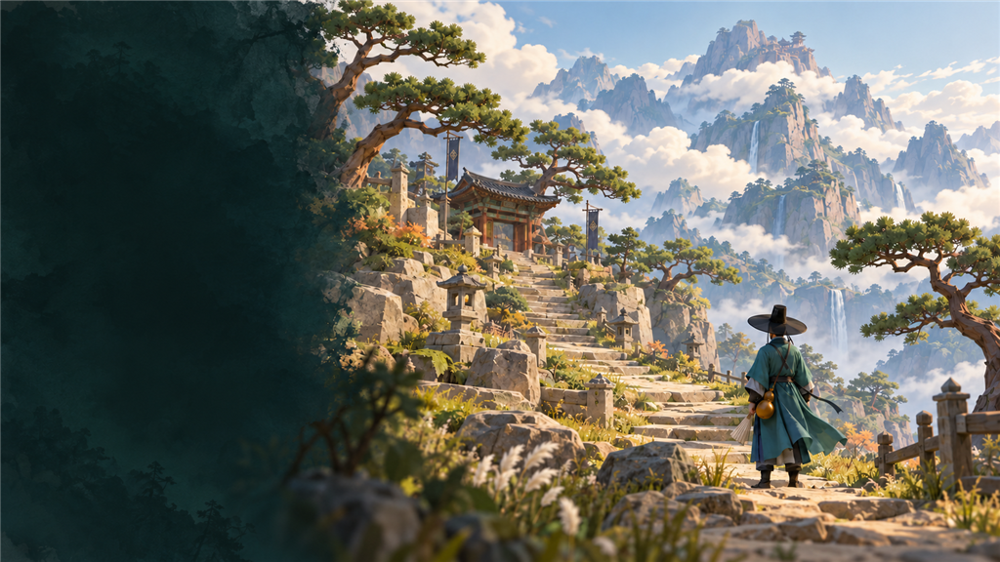
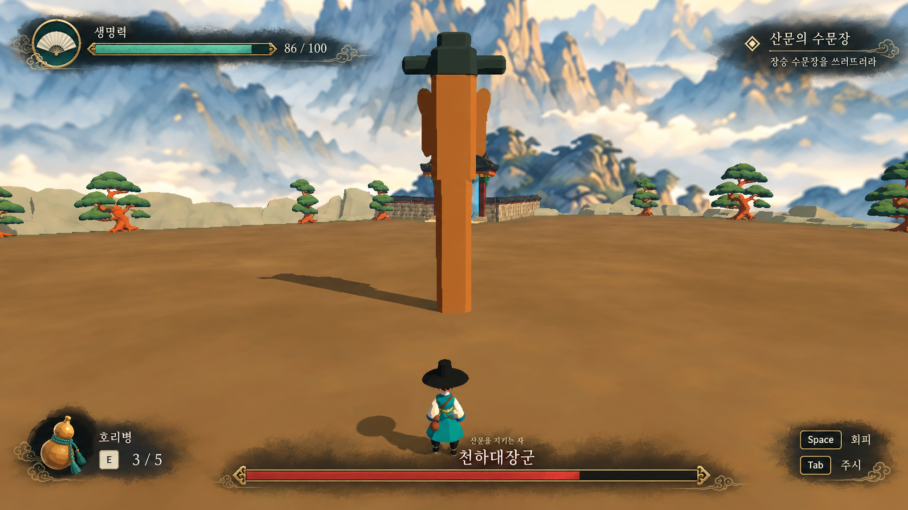
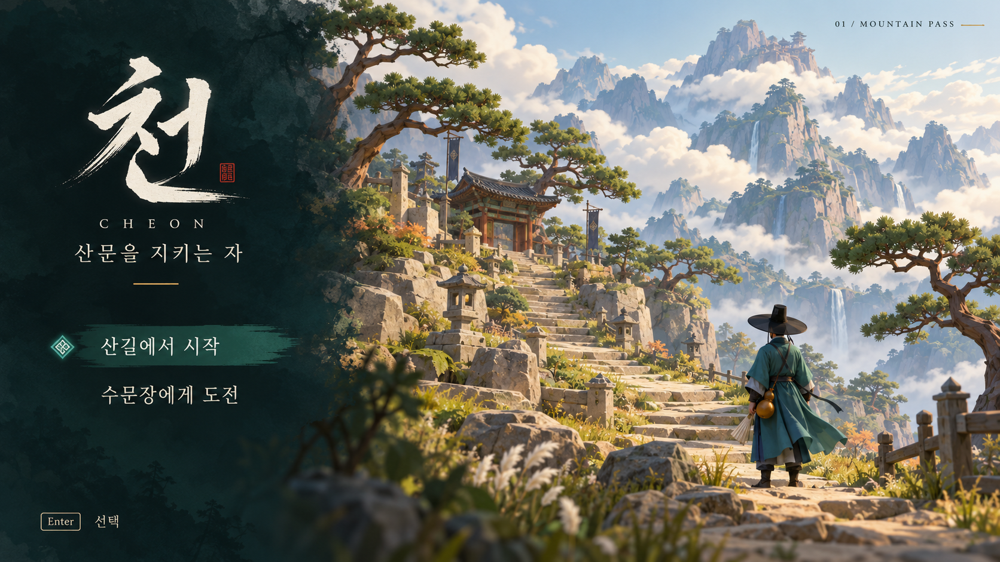

UI와 화면 전환
- 좌상단 무기 표시와 체력·도력 이름 제거. 초록 체력과 파란 도력, 현재/최대 수치 표시.
- 우상단 조작키 아래에 현재 임무 배치. 호리병과 하단 보스 체력 구성 유지.
- 제목을 ‘천지인’으로 변경. 시작·보스 등장과 스킵·메뉴·결과 화면에 페이드 적용.
화면 구성과 타이틀을 정리하고, 도력·점진 회복·전투 수치를 적용했습니다. 효과음과 피격 연출을 보강한 작업 기록입니다.
프로젝트 적용 완료플레이 검증 54항목 통과게임 텍스처 최대 1024


이미지를 클릭하면 원래 크기로 볼 수 있습니다. 캡처는 검증 중 촬영되어 체력·카메라·배치가 시작 상태와 다를 수 있습니다.
| 항목 | 설정 | 동작 |
|---|---|---|
| 도력 최대 | 100 | 재도전·체크포인트에서 복구 |
| 회피 | 25 / 회 | 잔량 부족 시 회피 불가 |
| 달리기 | 5 / 초 | 도력 고갈 시 달리기 중단 |
| 적을 등진 달리기 | 10 / 초 | 전투 중 살아 있는 적에게서 멀어지는 이동 방향 판정 |
| 도력 재생 | 10 / 초 | 달리기 소모·회피 중에는 재생하지 않음. 일시정지·전환 중 유지 |
| 호리병 회복 | 40 / 회 | 마신 진행도만큼 회복, 중단 시 미회복분 지급 없음 |
| 보스 체력 | 1000 | 두 적용 씬에 반영 |
| 직접 공격 1 · 2 · 3타 | 10 · 15 · 40 | 타격별 최종 피해량 |
| 바람 공격 | 5 · 10 | 1타 바람 5 / 3타 바람 10 |
원본과 Unity 기본·Standalone·Android·iPhone·WebGL 임포트의 최대 크기를 1024로 제한했습니다. 종횡비를 유지했고 .meta도 함께 보관했습니다.




내장 이미지 생성 도구 · 프롬프트 · 에셋 경로 기록
디자인 방향 확인용 시안입니다. 최종 적용 결과는 위 실제 실행 화면을 기준으로 확인하세요.


이번 작업에서 제작·연결한 합성 WAV 음원입니다. 각 항목에서 미리 들을 수 있습니다.
7개 그룹 · 54항목 통과. Unity 6000.3.14f1에서 컴파일과 피격 셰이더 오류 없이 확인했습니다.
| 검증 그룹 | 항목 수 | 결과 | 근거 |
|---|---|---|---|
| 도력·이동 자원 | 8 | 통과 | 원본 기록 |
| 호리병 회복·피격 중단 | 7 | 통과 | 원본 기록 |
| 공격·회피에 의한 회복 중단 | 4 | 통과 | 원본 기록 |
| 피해량·지면 투영·HUD | 9 | 통과 | 원본 기록 |
| 화면 전환·음향 | 21 | 통과 | 원본 기록 |
| 실제 애니메이션 명중 | 2 | 통과 | 원본 기록 |
| 결과 화면·재도전 | 3 | 통과 | 원본 기록 |
실제 1타에서 직접 10 + 바람 5가 한 번씩 적용되어 보스 체력 1000 → 985임을 확인했습니다. 검증 기록은 구현 당시 결과이며 보관 작업에서 재실행한 결과가 아닙니다.
관련 스크립트 18개와 피격 셰이더·머티리얼, 적용 씬 2개를 원래 프로젝트 경로 구조로 보관했습니다.
| 스크립트 | 이번 작업의 역할 |
|---|---|
| PassHud.cs | HUD 색상·수치·배치, 천지인 타이틀, UI 이미지 연결 |
| PassScreenFade.cs | 신규: 페이드 인·아웃 및 전환 중 시간·입력 제어 |
| PassPlayerEnergy.cs | 신규: 도력 소모·재생 및 적에게서 멀어지는 달리기 판정 |
| PassPlayerMovement.cs | 도력에 따른 달리기·회피 제한 및 소모 연결 |
| PassGourdDrinking.cs | 실제 마시는 진행도에 따른 점진 회복과 취소 처리 |
| PassGameFlow.cs | 화면 전환, 재도전·체크포인트 자원 복구, 음향·피격 연결 |
| PassBossEntrance.cs | 보스 등장·스킵에 페이드 적용, 카메라 복원 |
| PassBossPatternController.cs | 적 목록 조회와 보스 각성·소환 음향 연결 |
| PassBossPatternSettings.cs | 보스 최대 체력 및 공격 설정 기본값 |
| PassFanAttackDamageSettings.cs | 직접 공격과 바람 공격의 최종 피해량 설정 |
| PassFanAttackCombat.cs | 명중 위치 피격 효과 및 타격음 연결 |
| PassFanSweepMesh.cs | 지면 투영 시 적 몸체 제외 |
| PassFanWindParticles.cs | 바람 파티클 지면 투영 시 적 몸체 제외 |
| PassHitEffects.cs | 신규: 직접·바람·플레이어 피격 파티클 |
| PassEffects.cs | 기존 피격 호출을 새 효과로 연결 |
| PassPlayerAreaCombat.cs | 기존 범위 공격 경로의 피격 효과 연결 |
| PassAudio.cs | 효과음 15종 연결, 재생과 중복 타격음 제어 |
| PassPlayerAudio.cs | 신규: 이동·공격·장착·회피 동작과 음향 동기화 |
Assets/Arts/UI/MountainPassAssets/Arts/Audio/MountainPass보스 체력 1000을 기준으로 전투 시간과 회피·달리기 빈도를 관찰하며 도력 소비와 회복 체감을 조정합니다.
공격·피격·환경음의 음량과 거리감을 세부 조정하고, 필요하면 녹음 기반 폴리 사운드를 보강합니다.